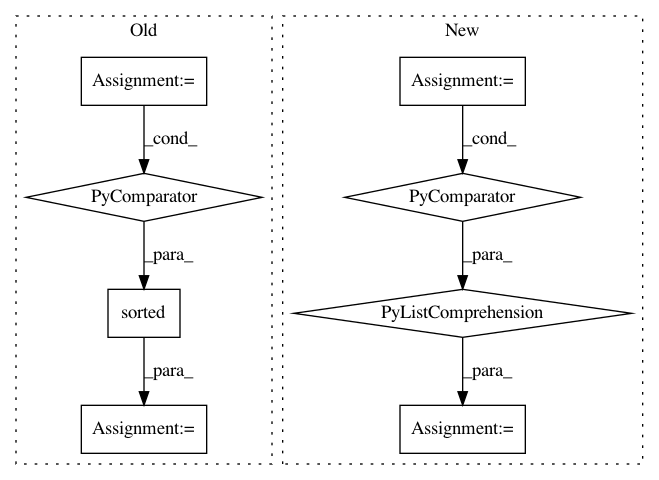

e77ef353f0ec74e4ea819354545848e3cd2ac51d,tensorflow_hub/native_module.py,,find_signature_inputs_from_multivalued_ops,#Any#,1033
Before Change
def find_signature_inputs_from_multivalued_ops(inputs):
Returns error message for module inputs from ops with multiple outputs.
inputs_for_warning = sorted((input_name, input_tensor.name)
for input_name, input_tensor in inputs.items()
if len(input_tensor.op.outputs) != 1)
if inputs_for_warning:
return (
"WARNING: The inputs declared in hub.add_signature() should be tensors "
"from ops with a single output, or else uses of tf.colocate_with() on "
After Change
for attr in ("indices", "values", "dense_shape"))
else:
dense_inputs.append((name, tensor))
warnings = [(name, tensor.name) for name, tensor in dense_inputs
if len(tensor.op.outputs) != 1]
if warnings:
return (
"WARNING: The inputs declared in hub.add_signature() should be tensors "
"from ops with a single output, or else uses of tf.colocate_with() on "
In pattern: SUPERPATTERN
Frequency: 3
Non-data size: 8
Instances
Project Name: tensorflow/hub
Commit Name: e77ef353f0ec74e4ea819354545848e3cd2ac51d
Time: 2018-08-21
Author: no-reply@google.com
File Name: tensorflow_hub/native_module.py
Class Name:
Method Name: find_signature_inputs_from_multivalued_ops
Project Name: p2irc/deepplantphenomics
Commit Name: 2c34a47f683dedb310f1c92be66870163cf80302
Time: 2019-10-10
Author: dbl599@mail.usask.ca
File Name: deepplantphenomics/heatmap_object_counting_model.py
Class Name: HeatmapObjectCountingModel
Method Name: load_heatmap_dataset_with_csv_from_directory
Project Name: deepfakes/faceswap
Commit Name: 2bcb7d572ac8fdacceb56d5cbd5b05fad8c71e5e
Time: 2021-03-23
Author: 36920800+torzdf@users.noreply.github.com
File Name: tools/sort/sort.py
Class Name: Sort
Method Name: sort_blur